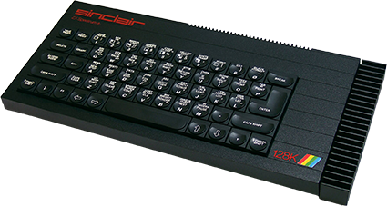
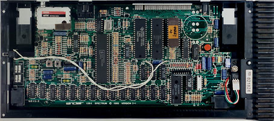
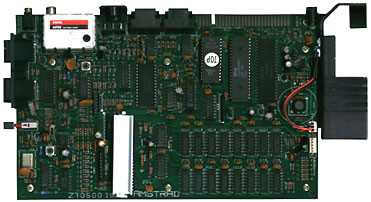
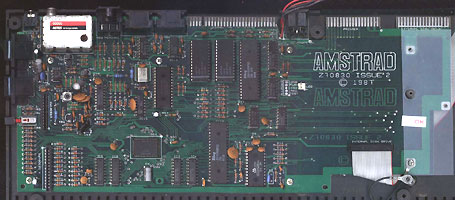
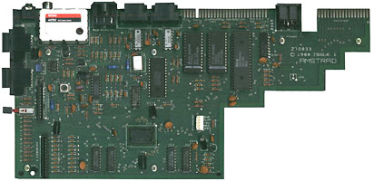

Spectrum 128K Board Revisions

Spectrum 128K
The Spectrum 128 board was not by any means a radical resign - much of it was very similar to the earlier Issue 5. The big differences were in the number of chips (significantly increased - many more memory chips plus an AY-3-8912A sound chip in place of the old buzzer), the new ROM and the new RGB, keypad and MIDI out connectivity.
As with the earlier issue 3, the redesigned ROM caused major compatibility problems, breaking many old programs. Some (notably Elite) were reissued in 128K-compatible versions but for the most part 128K owners had to put up with the situation. The problem recurred repeatedly in the following years as new 128K designs were produced.

Spectrum +2
Sinclair's tradition of incremental design was dispensed with when, in 1986, Amstrad took over the company's computer business. Externally, Amstrad's Spectrum +2 was radically different to any of its predecessors. There were major changes internally as well.
The circuit board was completely redesigned with around a new Amstrad ROM (as usual, this caused some compatibility problems). Although the input/output sockets were much the same as on the Spectrum 128, a major change to the circuitry was occasioned by the addition of a built-in cassette recorder, controlled by a second circuit board housed to the right of the main board.

Spectrum +3
The Spectrum +3 saw further radical changes. The number of chips was drastically reduced, with the rows of 8K memory chips familiar from previous boards reduced to just two 64K chips. On the right of the case, a 3" floppy disk drive was provided for mass storage. Yet another new ROM was introduced to provide the machine with a built-in disk operating system but, as usual, compatibility problems resulted.

Spectrum +2A
The last version of the Spectrum was the Spectrum +2A of 1988. As the name suggests, this was a variant of the Spectrum +2. It was easily distinguishable from its older counterpart by its black (rather than grey) case. Its innards, too, were very different - the +2A was essentially a +3 without the built-in floppy disk drive.